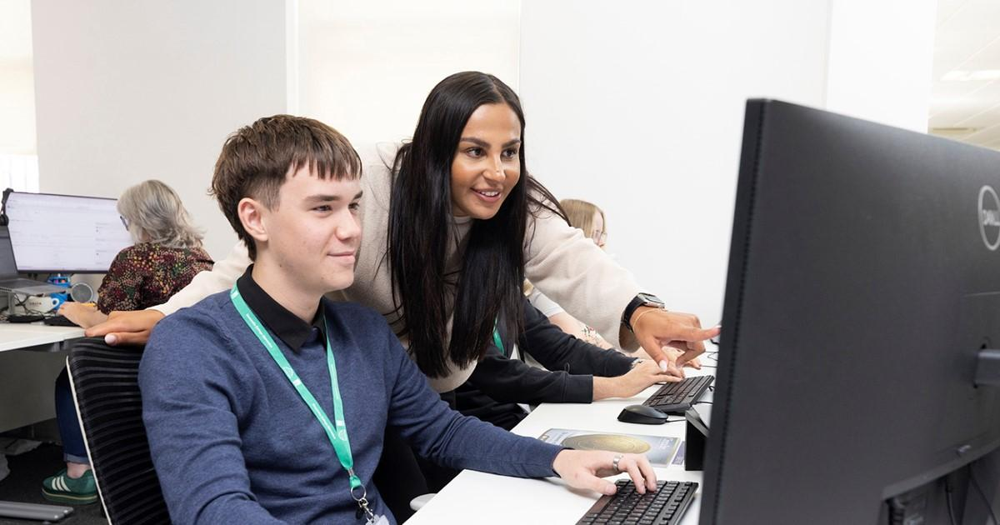

CIM Courses
Take your marketing career further with a globally recognised CIM qualification you can study entirely online.
Helping people develop the skills, confidence and qualifications needed to access employment and build successful careers.
Explore Courses
CertifiWise is a well-established independent training provider dedicated to empowering individuals through high-quality training, skills development and nationally recognised qualifications. We offer accredited, expert-led training that helps individuals and organisations across London gain recognised qualifications and advance their careers.
Take your marketing career further with a globally recognised CIM qualification you can study entirely online.
Choose from beginner to advanced AAT qualifications that employers value.
Gain the knowledge required to advise customers on mortgage products.
Leadership and management qualifications.
The course covers what equality diversity and inclusion is, key legislation
This course raises awareness of money laundering so that you can understand more about your responsibilities and how to comply with relevant legislation.
You will finally be prepared for the official Comptia A+ Certifications.
These comprehensive qualifications are ideal for anyone looking for a career in ICT.